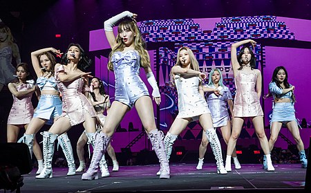

BTS (Korean: 방탄소년단; RR: Bangtan Sonyeondan; lit. Bulletproof Boy Scouts), also known as the Bangtan Boys, is a South Korean boy band formed in 2010. The band consists of Jin, Suga, J-Hope, RM, Jimin, V, and Jungkook, who co-write or co-produce much of their material. Originally a hip hop group, they expanded their musical style to incorporate a wide range of genres, while their lyrics have focused on subjects including mental health, the troubles of school-age youth and coming of age, loss, the journey towards self-love, individualism, and the consequences of fame and recognition. Their discography and adjacent work has also referenced literature, philosophy and psychology, and includes an alternate universe storyline.

Twice (Korean: 트와이스; RR: Teuwaiseu; Japanese: トゥワイス, Hepburn: Tuwaisu; commonly stylized in all caps) is a South Korean girl group formed by JYP Entertainment. The group is composed of nine members: Nayeon, Jeongyeon, Momo, Sana, Jihyo, Mina, Dahyun, Chaeyoung, and Tzuyu. Twice was formed under the television program Sixteen (2015) and debuted on October 20, 2015, with the extended play (EP) The Story Begins, and has received the honorific title of "The Nation's Girl Group" in their home country.
Exo (Korean: 엑소; RR: Ekso; stylized in all caps) is a South Korean-Chinese boy band based in Seoul formed by SM Entertainment in 2011 and debuted in 2012. The group consists of nine members: Xiumin, Suho, Lay, Baekhyun, Chen, Chanyeol, D.O., Kai and Sehun. They are noted for releasing music and performing extensively in Korean, Mandarin and Japanese.